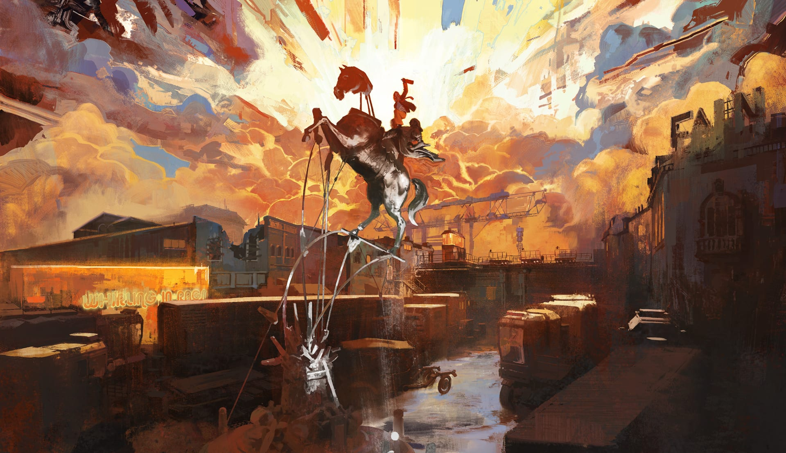
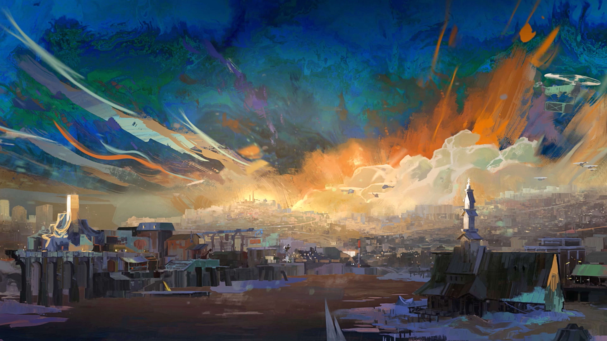

The Whirling-in-Rags

Harry's starting point, an important hotel and social location in Martinaise.The Whirling-in-Rags is the hotel where Harry wakes up and an important starting point for the investigation.
A guide to the places in and around Martinaise
The investigation takes Harry and Kim through Martinaise, a district of Revachol. These locations offer a glimpse of its waterfront, local landmarks, and history.

Harry's starting point, an important hotel and social location in Martinaise.The Whirling-in-Rags is the hotel where Harry wakes up and an important starting point for the investigation.
 A small coastal community where Harry and Kim find people and clues.
A small coastal community where Harry and Kim find people and clues.
The fishing village is a quiet community along the coast, away from some of the busier streets of Martinaise.
 A cold, empty landmark that shows another side of Martinaise's history.
A cold, empty landmark that shows another side of Martinaise's history.
The old church is a landmark on the coast. Its empty interior and surrounding area hold stories of their own.

The larger city that surrounds Martinaise and shapes its politics and culture.Revachol is the larger city around Martinaise. Its skyline reflects the history and uneven fortunes of the city.